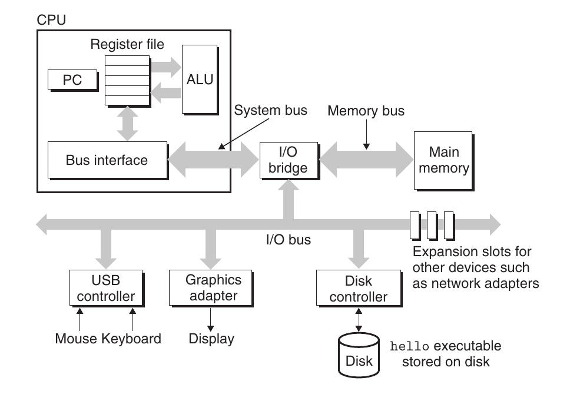
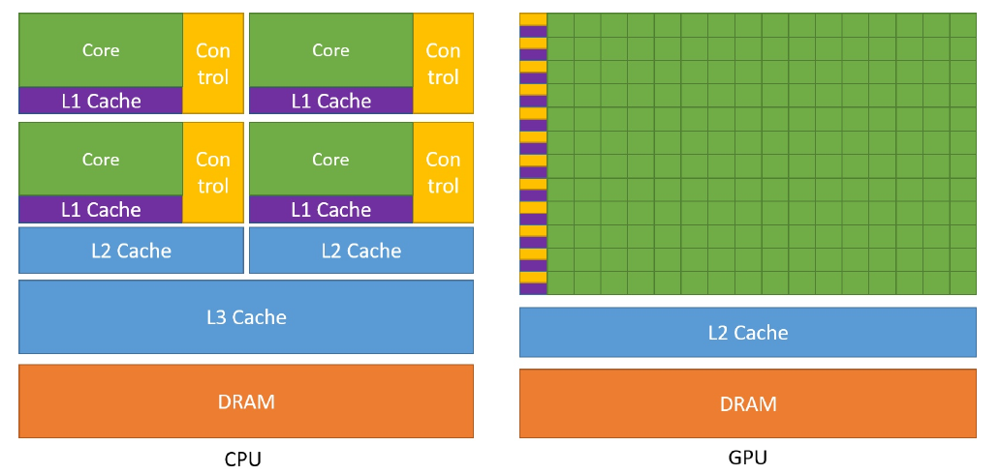

算术运算 vs 逻辑运算¶
学习目标¶
- 了解计算机体系结构演进的核心脉络
0. 问题¶
计算机既可以进行算术运算，也能进行逻辑运算，到底哪类运算用的多呢？
1. 典型系统的硬件组成¶

CPU最核心的计算单元就是算术逻辑单元(ALU)，它既能执行算术运算(1 + 1 = 2)又能执行逻辑运算(1 AND 1 = 1)。因为 在底层电路中，算术运算（如加法器、乘法器）本身就是由逻辑门（AND, OR, XOR）组合而成的。半导体芯片行业并没有一个针对所有芯片“逻辑 vs 算术”晶体管数量的绝对宏观统计数据。
2. 从硬件来看¶
如果我们从“晶体管预算（Transistor Budget）的分配意图” 来看——即 芯片把多少资源拿去做了“控制、分支预测、缓存和复杂指令逻辑”（服务于控制逻辑/逻辑运算），又把多少资源拿去做了“密集的算术执行单元/ALU/MAC”（服务于算术运算）——各时代主流芯片的晶体管和面积分配比例有着极其戏剧性的变迁。
2.1 启蒙时代（1950s - 1970s）：算术至上，纯粹的“计算器”¶
在大型机和微处理器诞生的初期，计算机的主要任务是导弹弹道计算、人口普查和科学核算。
- 资源分配：算术 80%+, 逻辑控制 <20%
- 架构特征： 这个时代的芯片极其珍贵，晶体管数量极少（如 1971 年的 Intel 4004 仅有 2,300 个晶体管）。由于没有复杂的操作系统和网络协议，芯片不需要复杂的调度。绝大部分的电路被死死地锁在算术单元（ALU）上。
- 代表芯片： 早期大型机（如 ENIAC、UNIVAC）和第一代单片机。它们的控制部分往往依靠硬线逻辑（Hardwired Logic）甚至外部物理接线，晶体管或电子管几乎全部用来做加法和移位。
2.2. PC 与互联网时代（1980s - 2000s）：逻辑控制与缓存的绝对统治¶
随着个人电脑（PC）的普及、图形操作系统（Windows/Mac OS）的出现以及互联网（TCP/IP、万维网）的爆发，计算机的核心任务从“算海量数据”变成了“响应用户操作、处理复杂的条件分支、解析网络协议包和管理内存”。
- 资源分配：逻辑控制与缓存 85% - 90%, 纯算术单元 10% - 15%
- 架构特征（CPU的巅峰）： 在这个时代，CPU 成了“控制狂”。为了让单线程代码运行得更快，CPU 引入了极为复杂的 分支预测（Branch Prediction）、乱序执行（Out-of-Order Execution）、多级缓存（L1/L2/L3 Cache）以及指令译码器。
根据现代英特尔/AMD 主流 CPU 的内核显微照片（Die Shot）和架构分析：
- 缓存（SRAM）：占据了 50% 以上的晶体管。
- 控制、控制逻辑、分支预测、总线管理：占据了约 30% - 40% 的资源。
- 算术单元（ALU/FPU）：真正用于执行
ADD、MUL的算术核心，只占全芯片晶体管或面积的 10% 左右。
- 核心逻辑： 互联网时代的任务充斥着大量的
if-else条件判断、指针跳转。CPU 必须用 90% 的资源去“伺候”那 10% 的算术单元，确保它不会因为等数据或猜错分支而停顿。
2.3. 显卡与通用计算崛起（2000s - 2010s）：算术的第一次复兴（GPU）¶
3D 游戏和高清视频的发展，带来了海量、重复、无分支的像素计算需求，传统的 CPU 在这种任务面前效率极低，GPU 应运而生。
- 资源分配（GPU）：算术 80%+, 逻辑控制与缓存 <20%
- 架构特征： 与 CPU 形成鲜明对比，GPU 采用了“暴力美学”。它直接砍掉了复杂的乱序执行和庞大的分支预测，把省下来的所有晶体管预算，全部砸在 算术逻辑单元（ALU）上。 我们可以对比一下同时代 CPU 与 GPU 的晶体管/面积真实分配估算：
| 芯片类型 | 控制与分支预测 (Control) | 缓存 (Cache/Memory) | 算术运算单元 (Compute/ALU) |
|---|---|---|---|
| 传统 CPU (如 Intel Core) | 约 30% - 40% | 约 50% | 约 10% - 15% |
| 通用 GPU (如 NVIDIA Tesla/Pascal) | 约 5% - 10% | 约 10% - 15% | 约 75% - 80% |
- 时代意义： 计算机再次发现，当面对图形和早期的线性代数（如矩阵乘法）时，我们不需要那么聪明的“控制大脑”，我们需要的是几千个拼命做算术的“苦力”。
2.4. 大模型与生成式 AI 时代（2010s 后 - 2026年）：算术强权与定制算力（TPU/NPU/张量芯片）¶
进入深度学习和 Transformer 大模型时代，计算模式发生了质变：整个世界变成了 高维矩阵乘法（GEMM）。大模型不需要复杂的条件跳转，它需要的是每秒做几百太次（TFLOPs）的乘加运算（MAC）。
- 资源分配（TPU/Tensor Core）：算术 85% - 90%
- 架构特征： 以 Google 的 TPU 和 NVIDIA 的 Tensor Core 为代表，芯片设计走向了极端的脉动阵列（Systolic Array）架构。
- 在这种结构中，控制逻辑被简化到了极致，数据像波浪一样在数万个硬连线的乘法器和加法器之间流动，不需要中途去访问复杂的缓存或通过复杂的指令译码。
- 最新的 AI 芯片（如 NVIDIA Hopper/Blackwell、Google TPU v5e/v6）中，用于 矩阵算术运算（Tensor Core）和专用向量运算 的晶体管比例达到了历史最高峰。
总结：芯片设计的“钟摆效应”¶
计算机芯片的发展史，实际上是一部 晶体管预算在“为了应对复杂世界的控制逻辑”与“为了应对海量数据的算术密度”之间反复横摆的演进史：
[ 1950s 科学计算 ] --> 纯粹算术 (加减法器)
|
[ 1990s PC与互联网 ] --> 极致逻辑 (分支预测、缓存、if-else 优化)
|
[ 2010s 3D图形与AI ] --> 算术复兴 (GPU 乱序砍掉，堆叠 ALU)
|
[ 2020s 大模型时代 ] --> 算术统治 (TPU 脉动阵列，90% 资源用于矩阵乘加)
3. 从程序开发角度来看¶
从编程范式、数据类型和程序员群体的变化来审视这段历史，能看得更加透彻。硬件晶体管的博弈，在软件层面上直接表现为“程序员在代码里究竟在写什么类型的数据”。
我们可以把这段进化史划分为三个极具代表性的编程时代：
3.1. 科学家与大型机时代（1950s - 1970s）：浮点数的“神庙时代”¶
在那个时代，没有“软件工程师”这个职业，写代码的人都是物理学家、数学家或弹道专家。
- 核心数据类型：高度依赖高精度的浮点数（Float/Double）和复数。
- 编程图景： 早期的 Fortran 语言几乎就是为了科学计算而生的。那时候计算机不普及，算力极其昂贵，每一次上机都要算导弹轨迹、气象模拟、核武器临界值。对于这些科学家来说，计算机就是一个纯粹的“超级算术放大器”。如果芯片的算术性能不强，对他们来说就是废铁。
3.2. PC 与互联网时代（1980s - 2000s）：if-else 的黄金时代，浮点数的边缘化¶
随着个人电脑的普及，软件从实验室走向了写字楼和千家万户。程序员的身份从“科学家”变成了“业务开发者”，编写的是操作系统、办公软件（Word/Excel）、网页和数据库。
- 核心数据类型：
int（整数）、bool（布尔值）、char/string（字符串）以及海量的 指针与对象引用。 - 绝大多数程序员不用浮点数：
在长达几十年的时间里，绝大多数企业级、网页级、甚至系统级的程序员，在职业生涯中可能从未碰过、或者极少使用浮点数运算。他们每天都在和业务逻辑缠斗：
“如果用户未登录（
if (!is_logged_in)），跳转到登录页；如果账户余额大于商品价格，执行扣款……”
著名的“浮点数翻车现场”
很多缺乏科学计算训练的现代程序员，甚至连最基本的 浮点数精度丢失 原理都不知道。一个最经典的编程冷知识就是：
print(0.1 + 0.2 == 0.3) # 输出False
因为普通业务根本不需要、也不敢用浮点数。如果你去写银行的财务系统或者电商的购物车，使用 float 或 double 计算价格会导致严重的账目对不上。为了规避算术误差，程序员会故意用逻辑手段绕开浮点数——例如 把所有金额乘以 100，全部转换成 int（整数，代表“分”）来进行加减。
在这个时代，除了 3D 游戏引擎开发者和多媒体解码器专家（他们是少数需要狂堆浮点算力的群体），90% 的程序员都在用 CPU 强大的 逻辑控制和整数单元 来构建互联网的大厦。
3.3. 深度学习与大模型时代（2010s 至今）：算术的全面暴政与“低精度”狂欢¶
当行业进入大模型时代后，软件开发的底层逻辑被彻底重构了。
- 核心数据类型：从高精度的
double/float演变为极低精度的半精度/微精度浮点数（FP16、BF16，乃至 FP8、FP4）和低精度整数（INT8/INT4）。 - 编程图景的剧变：
今天当你写下
model.generate()或者在 PyTorch 里定义一个神经网络时，虽然你写的是 Python，但代码一旦下发到底层，所有的if-else逻辑控制几乎全部消失了。 取而代之的是，硬件要在几毫秒内吞噬数亿个 权重参数（Weights）。
在大模型里，我们不需要完美的 0.1 + 0.2 == 0.3 的科学精度，我们需要的是“模糊的正确”。
- 传统的 PC 程序员用 64 位的
double追求极端的精确，或者用int追求绝对的逻辑对错。 - 大模型程序员（和芯片设计者）则说：“把精度砍掉！我不要 FP32，给我换成 FP8（8位浮点数）！”
因为精度变低了，芯片可以在相同的晶体管面积里塞进成倍的 乘加运算器（MACs）。大模型的整个运行过程，本质上就是数据在无数个低精度浮点数矩阵里做疯狂的乘法和加法。
总结¶
从编程演进来看：
- 早期：我们在用计算机“算”世界（高精算术）。
- 中期：我们在用计算机“管”世界（复杂逻辑控制，排斥浮点数）。
- 现在：我们把世界“变成矩阵”扔给计算机去暴力碾压（海量低精算术）。
这正是为什么在这个时代，那些曾经统治世界的复杂 CPU 沦为了大模型系统里的“大总管”（负责调度和接线），而专为算术而生的 GPU/TPU 成了垄断时代的“超级印钞机”。
4. CPU这个“控制狂”¶
在 PC 和互联网时代，CPU 之所以被称为“控制狂”，是因为它面对的代码充满了未知性（充满了各种由 if-else、while 构成的复杂业务逻辑）。为了让这些充满逻辑跳转的代码跑得更快，CPU 不得不砸下海量的晶体管，构建了一套极其庞大的“逻辑伺候机构”。
如果把真正的算术单元（ALU）比作一个“加工零件的工人”，那么 CPU 内部绝大部分的晶体管，其实都是在扮演“秘书、预测师、仓库管理员和流水线调度员”。
以下是 CPU 为了应对这些逻辑运算而疯狂堆砌晶体管的几个核心大户：
4.1. 分支预测器（Branch Predictor）—— 晶体管的“算命先生”¶
这是 CPU 内部为了应对 if-else 逻辑跳转而设计的、最消耗晶体管的复杂电路之一。
- 为什么要它？ 现代 CPU 内部的流水线（Pipeline）极长（通常有 15-20 级）。这意味着一条指令从“读进来”到“执行完”，需要好几个时钟周期。如果代码里遇到一个
if (x > 0)，在算术单元算出x到底大不大于 0 之前，CPU 根本不知道下一步该执行if里面的代码，还是else里面的代码。如果原地等待算术结果，流水线就会彻底卡死（产生 Bubble）。 - 晶体管堆在哪里？
- 分支目标缓冲区（BTB, Branch Target Buffer）：一块巨大的高精准、超低延迟的内部硬件缓存，专门用来记录历史上每一次
if-else到底往哪走。 - 方向预测器（Direction Predictor）：内部集成了复杂的统计学和机器学习算法硬件（如 TAGE 预测器）。它通过极其复杂的门电路，在几纳秒内预测出这次跳转的概率。
- 分支目标缓冲区（BTB, Branch Target Buffer）：一块巨大的高精准、超低延迟的内部硬件缓存，专门用来记录历史上每一次
- 代价：在现代高性能 CPU 核心中，单是分支预测相关的逻辑和专用 SRAM 缓存，就要吃掉 核心近 10% - 15% 的晶体管预算。如果预测成功，CPU 爽快起飞；如果猜错（Branch Misprediction），整个流水线已经提前跑了几十步的代码必须全部扔掉（Flush），代价极高。
4.2. 乱序执行与指令级并行（Out-of-Order Engine）—— 调度交警¶
早期的计算机非常死板，代码怎么写，它就怎么执行。但互联网时代的代码充斥着“从内存读一个字符串，然后判断它是否等于某个值”的操作。
- 为什么要它？ 去内存（RAM）拿数据太慢了，CPU 等一个数据可能要耗费几百个时钟周期。为了不让算术单元闲着，CPU 引入了 乱序执行逻辑。如果指令 A 在等内存数据，CPU 会用逻辑电路强行越过指令 A，去后面寻找指令 B、C、D，只要它们的数据准备好了，就先放行它们去执行。
- 晶体管堆在哪里？
- 重排序缓冲区（ROB, Reorder Buffer）：一个巨大的追踪池，用来确保虽然执行是乱序的，但最后吐出结果时必须按代码原有的顺序排列。
- 保留站/调度器（Reservation Stations / Schedulers）：极其复杂的全连接矩阵电路，每时每刻都在监控几百条指令的状态，动态寻找可以并行的指令。
- 寄存器重命名别名表（RAT, Register Alias Table）：用硬件逻辑动态消除代码里的寄存器冲突。
- 代价：这套乱序执行引擎（OoO Engine）是现代 CPU 内部逻辑复杂度最高的区域。
4.3. 多级高速缓存（L1/L2/L3 Cache）—— 晶体管的绝对“地皮霸主”¶
如果你去看任何一张现代 CPU 的晶体管分布图（Die Shot），你会发现 超过 50% 甚至 70% 的晶体管面积都是一片空旷的、排布极其整齐的矩阵 —— 那就是 Cache（SRAM）。
- 为什么要它？ 算术单元（ALU）执行一次加法只需要 0.5 纳秒，而从主内存（DDR5）拿一次数据需要 60 纳秒。如果不堆缓存，ALU 在 99% 的时间里都在“等米下锅”。
- 晶体管堆在哪里？
- L1 Data/Instruction Cache、L2 Cache、以及高达几十上百兆的 L3 Cache。
- 每一个 SRAM 存储位（Bit）都需要 6个晶体管（6T） 来构建。为了存放几百兆的高速缓存，CPU 内部要疯狂塞入数十亿个晶体管。
- 缓存一致性协议（Cache Coherency Logic）：多核 CPU 之间为了确保每个核心看到的变量是一样的（比如著名的 MESI 协议），硬件内部有极其庞大的监听和广播逻辑电路，这些同样全由晶体管构成。
4.4. 指令译码与微操作缓存（Decode & uop Cache）—— 语言翻译官¶
x86 架构背负了沉重的历史包袱，它的指令集（CISC，复杂指令集）长度是不固定的（从 1 字节到 15 字节不等），底层硬件根本没法直接执行。
- 为什么要它？ CPU 必须先把这些复杂的硬编码逻辑“翻译”成硬件真正认识的、固定长度的 微操作（μops，Micro-operations）。
- 晶体管堆在哪里？
- 庞大的指令译码器（Decoders）阵列，尤其是面对多字节、变长指令时的复杂并行分析电路。
- 微操作缓存（μop Cache / DSB）：为了避免重复翻译，CPU 专门做了一个硬件缓存，用来存放已经翻译好的 μops。
4.5 为什么大模型时代不需要这些？¶
当你明白了 CPU 为了这些逻辑付出了多大代价，你就能瞬间明白为什么大模型时代（GPU/TPU）能实现算力的指数级暴涨：
大模型的矩阵乘法代码是极其高确定性的，它就是一句话：“把这两个 4096 \times 4096 的矩阵乘起来”。
- 不需要分支预测：没有
if-else，一路乘到底。 - 不需要乱序执行：数据是成批流动的，严格对齐。
- 不需要复杂的变长指令译码：一条 SIMD 或 Tensor 指令直接管几万次运算。
所以，GPU/TPU 直接 把上述 80% 的复杂控制逻辑和缓存晶体管全部砍掉，换成了纯粹的、排成方阵的乘法器（ALU/MAC）。
用一句话总结：CPU 堆砌晶体管是为了应对“代码的未知与混乱”；而 AI 芯片堆砌晶体管是为了应对“数据的庞大与纯粹”。
5. GPU和CPU的对比¶

上图非常直观地展示了 CPU（中央处理器） 和 GPU（图形处理器） 在架构设计上的根本差异。这种差异决定了它们各自擅长处理的任务类型。
5.1. 核心数量与结构（Core Architecture）¶
- CPU（左图）：
- 核心数量少： 图中展示了4个核心（Core）。
- 结构复杂： 每个核心都配备了独立的 Control（控制单元） 和 L1 Cache（一级缓存）。
- 特点： CPU的设计理念是“少而精”。每个核心都非常强大，具备强大的逻辑判断、分支预测和乱序执行能力，适合处理复杂的、串行的逻辑任务（如操作系统调度、运行单个大型软件）。
- GPU（右图）：
- 核心数量极多： 图中右侧密集的绿色网格代表了成百上千个微小核心（流处理器/ALU）。
- 结构简单： 这些核心没有独立的Control单元（图中左侧的黄紫相间条带代表了共享的控制逻辑），且每个核心拥有的缓存极小。
- 特点： GPU的设计理念是“多而简”。虽然单个核心的计算能力较弱，且只能执行简单的指令，但通过庞大的数量，可以同时处理海量的简单计算任务（如像素渲染、矩阵运算）。
5.2. 缓存层级（Cache Hierarchy）¶
- CPU：
- 层级分明且大： 拥有 L1、L2、L3 三级缓存。
- L1/L2 私有： 每个核心都有自己私有的L1缓存（紫色）和L2缓存（浅蓝色），用于极速访问当前正在处理的数据。
- L3 共享： 底部的L3缓存（深蓝色）由所有核心共享，容量较大，用于减少访问内存的延迟。
- 目的： CPU处理任务往往需要频繁读取随机数据，大缓存能显著降低延迟，提升单线程性能。
- GPU：
- 层级简单： 图中主要展示了 L2 Cache（浅蓝色），且没有L3缓存（或者极小，通常统称为L2）。
- L1 微小： 虽然图中未明确标出L1，但实际上GPU核心内部的缓存非常小，主要用于线程间的数据交换。
- 目的： GPU处理的是流式数据（如像素），数据吞吐量比访问延迟更重要。GPU依靠大量的线程切换来掩盖内存延迟，而不是依靠大缓存。
5.3. 控制单元（Control Unit）¶
- CPU： 图中黄色的 Control 块非常大，且每个核心独享。这意味着CPU花费了大量的晶体管资源用于指令译码、分支预测和流程控制，能够灵活应对各种复杂的代码逻辑（如大量的
if-else判断）。 - GPU： 图中左侧的黄紫竖条代表了控制逻辑，它被大量核心共享。这意味着GPU的控制单元相对简单，它更倾向于让所有核心整齐划一地执行相同的指令（SIMT架构）。如果代码逻辑复杂，GPU的效率会大幅下降。
5.4. 内存与带宽（DRAM）¶
- 两者底部都有橙色的 DRAM（动态随机存取存储器）。
- 区别： 虽然图中显示相似，但在实际硬件中，GPU通常配备的是 GDDR（图形双倍数据速率） 显存，其位宽极大，带宽远高于CPU使用的DDR内存。
- 原因： GPU需要在极短时间内吞吐海量数据（例如渲染4K画面的每一帧），因此对带宽要求极高；而CPU更看重内存的低延迟响应。
5.5. 总结对比表¶
| 特性 | CPU (左图) | GPU (右图) |
|---|---|---|
| 核心数量 | 少 (例如4-16个) | 极多 (例如数千个) |
| 核心复杂度 | 高 (具备完整逻辑控制) | 低 (简单的计算单元) |
| 控制单元 | 每个核心独立且强大 | 共享，相对简单 |
| 缓存 (Cache) | 大容量，多级 (L1/L2/L3) | 小容量，层级简单 |
| 擅长任务 | 串行计算、逻辑控制、操作系统 | 并行计算、图形渲染、AI训练 |
| 设计哲学 | Latency Oriented (延迟导向，追求单任务速度) | Throughput Oriented (吞吐量导向，追求多任务总量) |
一句话概括： CPU像是一个 由几位博士组成的精英团队（能解决复杂难题，但人少）；GPU像是一支 由几千名小学生组成的施工队（只能做简单的加减乘除，但人多力量大，能在同一时间完成巨大的工作量）。